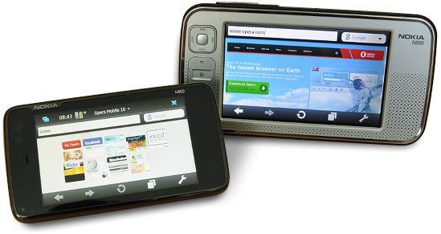

We’re back! Opera Mobile 10 on Maemo
We’re proud to present the first preview build of Opera Mobile 10 for Nokia N900 and N800/N810.
Back in 2005, Nokia released the Nokia N770. The included web browser was developed by Opera Software. In 2008, Nokia chose to stop including Opera with Maemo, switching instead to a browser developed internally. Today’s preview build marks our unofficial return to the Maemo platform, after a little over 3 years of absence.
This Maemo version of Opera Mobile 10 was created as a hobby project by a small team of developers in their spare time. In total, about 6 man-weeks were spent on creating the release. It’s worth pointing out that this is not an officially-supported release. As such, it has not undergone our usual quality assurance processes, and at times may not feel as polished or complete as an official release. This also means that there may never be a “final” release of Opera Mobile 10 for Maemo devices, since it’s just that much more fun to add shiny new features rather than fixing boring old bugs. 
The preview build contains the same features available in Opera Mobile 10 for Symbian and Windows Mobile smartphones. These include fast and economical browsing with Opera Turbo, bookmark and Speed Dial sync with other Opera products, and of course multiple tabs. For more information, see our rundown of Opera Mobile 10 features .
We have two additional treats for Maemo users: this is the first public release of Opera Mobile to include Carakan — our new Javascript engine .
Unfortunately, JIT support for ARM was not yet stable enough to include, but the speed advantage we gain from Carakan compared to Opera Mobile running on other platforms is already quite substantial.
The second treat is the Mobile debut of our Vega rendering library which — among other things — is responsible for rendering all the exciting new eye-candy like CSS3 rounded corners and shadow effects .
There are a number of known issues with this build, listed below:
- Adobe Flash and other plugins are not supported.
- Screen tearing may be visible when panning, especially in portrait mode. We expect to fix this in a future update.
- The built-in on-screen keyboard is not supported. Use the physical keyboard or the on screen keyboard included with Opera Mobile.
- There is no power management support. In practice this means that if you open a page with animations and leave Opera running, you will soon be using a payphone. Power is drained even when Opera is running in the background and/or the screen is turned off.
- If you set Opera as the default browser, for example by installing the Browser Switchboard , an extra empty tab will get opened every time you open a link from an external application.
Opera Mobile 10 on Maemo supports portrait screen mode, and will choose screen rotation automatically by default, based on the device orientation. It is also possible to select a specific screen mode manually from the settings menu. This works out-of-the-box on the N900. For the setting to work on the N800/N810 you need to install an additional kernel driver for rotation support .
The fullscreen button on N800/N810 only affects the native titlebar and menu. The “fullscreen” setting in the settings menu only affects Opera Mobile’s UI elements.
Download and install Opera Mobile 10 on your Nokia N800/N810/N900 using the phone’s default browser.
In case you encounter problems, please report bugs and issues using our bug wizard . We also welcome feedback on our forums .
Many thanks to the other Opera Mobile teams, as well as to the Carakan and Graphics teams for all their help in making this possible!
Best regards,
The Smooth Sailing Team at Opera Software’s Göteborg, Sweden office
(Fredrik Öhrn, Gustav Tiger, Vjaceslavs Klimovs and Anders Höckersten)
Comments
No new comments accepted.